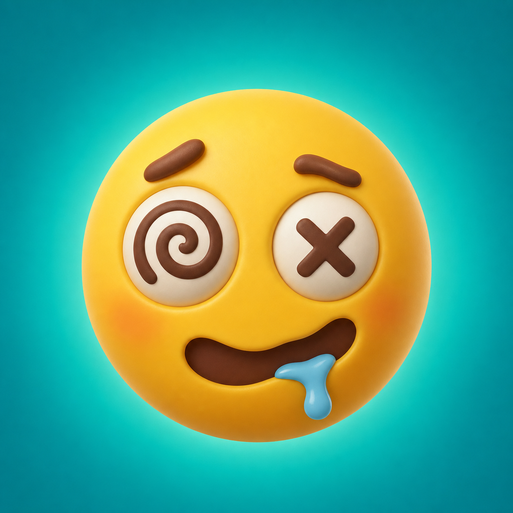

Farklı bulmaca sistemleri
Anormallikleri bulun, benzetmeleri bağlayın, kronolojiyi kurun, ızgaraları çözün ve daha fazlasını deneyin.

DumojiMeraklı zihinler için küçük bir bulmaca oyunu
Emojileri okuyun, gizli ilişkiyi bulun ve en iyi tahmininizi yapın. Her gizem, küçük bir şakayla ve şüpheli miktarda tatmin duygusuyla ödüllendirilir.
Oyun
Dumoji, özenle yazılmış küçük gizemlerden oluşur. Bazıları görsel, bazıları mantıksal, bazıları ise tuhaf olmaya kararlıdır.
İçeride ne var?
Kısa oturumlar, uzun molalar ve cevabın birdenbire ortaya çıktığı anlar için tasarlandı.
Anormallikleri bulun, benzetmeleri bağlayın, kronolojiyi kurun, ızgaraları çözün ve daha fazlasını deneyin.
İlk bölümler ücretsizdir. İsteğe bağlı, tüketilemeyen tek bir satın alma kampanyanın kalanını açar.
Reklam, abonelik, hesap veya ücretli ipucu yok. İlerlemeniz ve ayarlarınız cihazınızda kalır.
Aynı tuhaf küçük gizemleri iPhone ve iPad'de İngilizce veya Türkçe oynayın.
Yardıma mı ihtiyacınız var?
Satın alma yardımı, sorun giderme adımları ve geliştiriciyle doğrudan iletişim için destek sayfasına bakın.